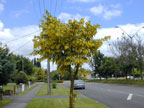
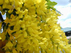
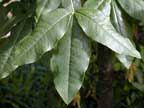
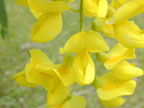
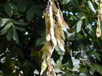

Laburnum
Laburnum anagyroides
Other names
Bean Tree, (nb several other species are also called bean tree) Golden Chain
Description
Ornamental small tree or large shrub, up to 10 metres tall with erect or spreading branches. Leaves are made up of three elliptical leaflets with a fine point at the apex. Yellow flowers hang in long clusters and are about 2 cm in diameter. Green seed pods (3 8cm long) develop after flowering (mid late summer), and these become dry and brown in autumn.
Similar plants
Kowhai also has yellow flowers and pods, but the two are easily distinguished by their leaves.
Distribution
Found all over New Zealand, cultivated in gardens, particularly in the South Island.
Toxin
The toxin is the quinolizidine alkaloid cytisine. Possesses properties similar to nicotine (stimulation of respiratory centres, provocation of muscle excitement and paralysis of the peripheral sympathetic ganglia). Cytisine may also be secreted in the milk of poisoned animals. Other alkaloids present include methylcytisine, laburnamine, and 1 hydroxymethyl 7 hydroxypyrrolizidine, although cytisine is the most important. All parts of plant are poisonous, although the pods and seeds are especially toxic.
Species affected
All classes of livestock, including horses. Dogs have been poisoned by chewing Laburnum sticks. Children.
Clinical signs acute
Severe vomiting, diarrhoea, prostration, irregular pulse and breathing. Mydriasis. twitching, excitement, incoordination, convulsions, coma and death due to asphyxiation. In horses, there can be salivation, colic, cold sweats and tachycardia.
Clinical signs chronic
Post mortem signs
Non specific lesions.
Diagnosis
Clinical signs, plant in environment and in the vomitus.
Differential diagnosis
Organophosphates, gastric irritants, neurotoxins.
Treatment
As for nicotinic toxicity, symptomatic treatment, cardiorespiratory stimulants, sedatives, diuretics. Chloral hydrate in large animals to control convulsions. Induce vomiting in dogs. Decontaminate with activated charcoal. No antidote.
Prognosis
Poor. Death is common.
Prevention
Prevent livestock from grazing the plant. Control in pastures and avoid throwing laburnum trimmings into pastures with livestock.
References
Conner H.E. The Poisonous Plants In New Zealand. 1992. GP Publications Ltd, Wellington
Parton K, Bruere A.N. and Chambers J.P. Veterinary Clinical Toxicology, 2nd ed. 2001. Veterinary Continuing Education Publication No. 208
Cooper M R, Johnson A W. Poisonous Plants and Fungi in Britan: Animals and Human Poisoning. Her Majesty’s Stationary Office. London. 1998
|  small tree |
 |
|
|
 |
 |
|
|
 |
||
|
|
|
|